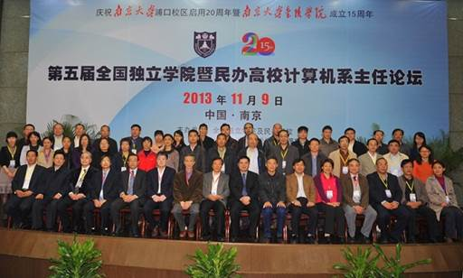
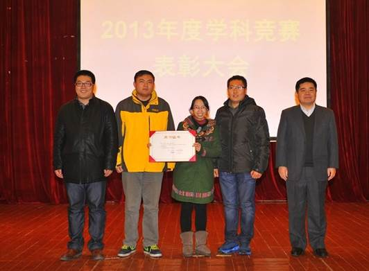

信息科学与工程学院
2013年度工作十大亮点
1、扎实有效开展党的群众路线教育实践活动
通过组织基层干部学习贯彻中央党的群众路线教育实践活动精神、组织教师访谈、个别谈心交换意见、总结工作和批评与自我批评相结合的方法，在肯定工作成绩的基础上，突出的解决信息沟通、工作方式方法的问题，使信工学院和谐的工作环境得以巩固和发展。
2、第五届全国独立学院暨民办高校计算机系主任论坛在我院召开
由我院计算机系具体组织的第五届全国独立学院暨民办高校计算机系主任论坛于11月9日在南京大学金陵学院召开，这也是论坛成立以来首次在江苏举行。共有近100位来自全国独立学院及民办高校的计算机学院院长/系主任和相关领域专家学者参加了本次论坛，教育部软件工程教学指导委员会副主任、北京工业大学原副校长侯义斌教授，南京大学陈道蓄教授等学界知名专家出席论坛、并做特邀报告。南京大学校长助理、金陵学院执行院长陆林教授出席开幕式并致词。江苏卫视、江苏教育频道、江苏新闻网、扬子晚报、现代快报、南京电视台、南京日报、南京晨报等新闻媒体在论坛现场采访报道。

3、以授课竞赛为平台，青年教师授课水平再上新台阶
在金陵学院组织的第三届青年教师授课竞赛决赛中，我院获得“组织奖”，吴冬芹老师获得一等奖，张燕、孔钦老师获得三等奖；在金陵学院第一届先进工作者评选中李元评为金陵学院第一届“先进工作者”。
4、2013年度考研录取率再创新高
2013年学生考研录取率继续保持在金陵学院各分院中的领先地位：2013年毕业生490人，录取研究生75人，电子专业录取率为20.7%，通信工程19%，计算机17.1%，信息管理15.8%，其中被南京大学录取27人，占录取总人数的38.6%。
5、机器人大赛再创佳绩，力克众多985高校
2013年中国机器人大赛信工学院代表队再创佳绩：在众多全国985高校211高校代表队参加的比赛项目中获得3项冠军！由于智能机器人实验室连续四年在全国机器人大赛中取得好成绩，金陵学院特授予“中国机器人大赛”指导教师团队夏庆锋、邹发光、张燕、谢鹏飞院长特别奖。

6、袁杰老师所带大学生毕业论文再次获得江苏省大学生2012年优秀论文二等奖
另，袁杰、何菁、戴瑾三位老师所带学生三篇毕业论文分别获得金陵学院2013年优秀毕业论文一等奖；黄强、俞海、张志伟所带学生毕业论文获得金陵学院2013年优秀毕业论文团体一等奖。
7、专业建设、实验室建设、教材建设、科研工作稳步发展
（1）、组织完成新增学士学位授予专业：软件工程、通信工程二个专业的自查整改工作，完成“自查整改报告”和“新增学士学位授予专业建设情况表”的申报材料工作。
（2）、以进一步优化计算机科学与技术专业应用型人才培养模式及推进软件服务外包试点专业建设为契机，计算机科学与技术专业获批为2013年金陵学院品牌专业。
（3）、在金陵学院领导的大力支持下，由金陵学院投资100万元新建机电工程/自动化专业综合实验室，在黄润生主任、丁尧老师的努力下，已进入具体建设阶段，预计2014年6月前建成。
（4）、“大学电子信息科学与技术英汉实验丛书”按计划顺利编辑出版：陈孝桢等编著的“模拟电路实验”已经出版并用于教学；王怀登等编著的“数字电路实验”、沈一骑等编著的“电工电路综合实验教程”、吴宗森等编著的“大学物理实验”正在排印，即将出版。
（5）、科研工作取得新成绩
a.叶保留与上海双杨电脑高科技开发公司成功签署了“基于android平台移动流媒体服务平台总体设计”校企合作项目（总经费5万元），对智能手机环境下的流媒体服务技术开展项目合作；
b.戴瑾、何菁作为骨干教师参加南京大学的国家自然科学基金项目：“电流和强太赫兹脉冲调制低耗超导太赫兹人工电磁媒质”（划归金陵学院经费12万元）
c. 何菁与东南大学合作的“光场相机及液体变焦透镜设备图像处理”已经签署协议（经费10万元）；
8、国际学术交流活跃
国际交流活跃，特别是2013年6月我院组织加拿大罗里尔大学Terry教授来访，进行教学活动一个月，在机器人教学与实验、CPLD教学与实验、电子电路CAD教学与实验三大内容与我院青年教师和学生进行了教学与交流，此项活动的开展对我院的教学改革，借鉴国外实验教学的先进理念与实践起到了示范效果。此项工作顺利开展与何菁主任、陈孝桢主任、万凯秘书的努力工作分不开的。
9、我院教工党支部被评为2013年南京大学优秀党支部称号，这是金陵学院唯一获得此荣誉的党支部
10、我院学工办倾心打造的三个学生组织（团学青、就业中心、党员工作部）工作开展卓有成效
（1）、团学青工作立足校内，对外延生，取得良好的社会效果：
我院团学青工作立足校内同时，能够积极 “走出去”，通过和南京市浦口区沿江小学签订了《青年志愿者实践基地》协议、进入小神童幼儿园支教、开展沿江小学科普行、暑期实践等一系列活动，增加了我院的影响力与美誉度，尤其是学生在丰县的暑期社会实践活动，得到了丰县电视台的关注，进行了专题报道。
（2）、就业扎实推进，与多家企业建立长期合作关系：
就业中心成立以来，各方面工作开展的如火如荼，本年度邀请20多家企业到我院进行招聘，其中不乏像国电南瑞、富士康软件、焦点科技等业界知名企业。同时在毕业生中间，也积极宣传国家村官工程、苏北计划、西部计划，让学生有多条路径可以选择。同时就业工作也注重进一步夯实基础，不断与企业联系，本年度与富士康软件、中国长城宽带网络有限公司签订了长期合作协议，为毕业生就业拓宽了渠道，目前就业率达到96%，高于江苏省大学生平均就业率。
（3）、信工院党工部成为学生党员培养教育的一个新平台：
我院今年成立了学生党工部。党工部成立后，做了很多工作，组织开展了“我的大学梦演讲比赛暨优秀党员表彰大会”、“党支部建设成果展”等重要活动。我院学生第五党支部刘乃郡同学被评为南京大学优秀共产党员，这是2013年南京大学十名优秀党员中唯一的一位学生党员。